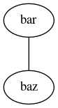
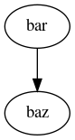

reStructuredText 备忘¶
@2019-02-13 新版功能: 创建
在 @2019-02-16 版更改: 增加更多角色及示例
段落¶
| # | with overline, for parts |
| * | with overline, for chapters |
| = | for sections |
| - | for subsections |
| ^ | for subsubsections |
| " | for paragraphs |
保留换行的段落：
| 保留换行
| 的段落
示例如下：
保留换行
的段落
文本格式¶
| text | *text* | 强调（斜体） |
| text | **text** | 着重强调（黑体） |
test |
``test`` | 代码示例 |
| test | `test` |
限制：
- 不能嵌套
- 文本首尾不能有空格
- 如果前后无空格，则需要使用“\ ”转义，例如 testcodetest
列表¶
| 无序列表 | * - |
| 有序列表 | #. 0. |
Roles¶
参考 Roles
| :any: | |
| :ref: | |
| :doc: | |
| :download: | |
| :numref: | |
| :envvar: | |
| :token: | |
| :keyword: | |
| :option: | |
| :term: | |
| :math: | \(a^2 + b^2 = c^2\) |
| :eq: | |
| :abbr: | LIFO |
| :command: | rm |
| :dfn: | |
| :file: | |
| :guilabel: | A |
| :kbd: | |
| :mailheader: | Content-Type |
| :makevar: | CC |
| :manpage: | |
| :menuselection: | |
| :mimetype: | text/html |
| :newsgroup: | comp.lang.c |
| :program: | dir.exe |
| :regexp: | [a-Z]+ |
| :samp: | print 1 + variable |
| :pep: | PEP 8 |
| :rfc: | RFC 1 |
Directives¶
参考 Directives
toctree
.. toctree:: :maxdepth: 5 :numbered: :caption: Table of Contents :name: mastertoc :totlesonly: :glob: :reversed: :hidden: :includehidden: genindex, modindex, search, _*** 不能作为文档名。contents
.. contents:: a title for the contents :depth:2
attention
注意
attention
caution
警告
caution
danger
危险
danger
error
错误
error
hint
提示
hint
important
重要
important
note
注解
note
tip
小技巧
tip
warning
警告
warning
epigraph
No matter where you go, there you are.
—Buckaroo Banzai
compound
The 'rm' command is very dangerous. If you are logged in as root and enter
cd / rm -rf *
you will erase the entire contents of your file system.
topic
.. topic:: Topic Title Subsequent indented lines comprise the body of the topic, and are interpreted as body elements.sidebar
.. sidebar:: Sidebar Title :subtitle: Optional Sidebar Subtitle Subsequent indented lines comprise the body of the sidebar, and are interpreted as body elements.
versionadded
2019-02-16 新版功能: 新增
versionchanged
在 2019-02-17 版更改: 修改
deprecated
3.1 版后已移除: Using new ...
seealso
rubric
centered
hlist
- A list of
- short items
- that should be
- displayed
- horizontally
highilght
.. highlight:: c :linenothreshold: 5
code-block
.. code-block:: ruby :linenos: :lineno-start: 1 :emphasize-lines: 3,5 :caption: a.py :name: a-py :dedent: 4
literalinclude
.. literalinclude:: example.rb :language: ruby :emphasize-lines: 12,15-18 :linenos: :encoding: lation-1 :pyobject: Timer.start :lines: 1,3,5-10,20- :start-after: :end-before: :prepend: :append: :diff:
glossary
sectionauthor
需要配置 show_authors。
codeauthor
index
only
math
productionlist
graphviz

graph
digraph

数学公式¶
\[ \begin{align}\begin{aligned}n_{\mathrm{offset}} = \sum_{k=0}^{N-1} s_k n_k\\\mathcal{L}_{QCD}=-\frac{1}{4}F_{\mu\nu}^a
F_a^{\mu\nu}-\sum\limits_f{\overline\psi_a^f(i\gamma^\mu\partial_\mu+m_f-g\gamma^\mu
A_\mu)^{\alpha\beta}\psi_\beta^f}\\F_{\mu\nu}^a=(\partial_\mu A_\nu^a-\partial_\nu A_\mu^a-gf_{bc}^a
A_\mu^b A_\nu^c)\end{aligned}\end{align} \]